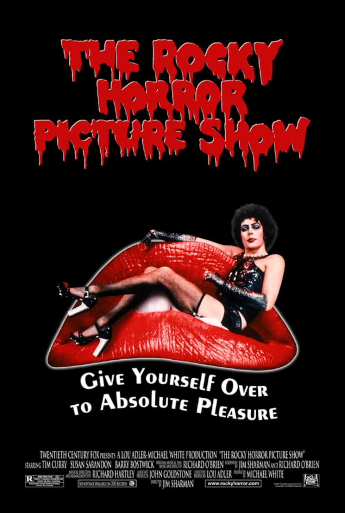
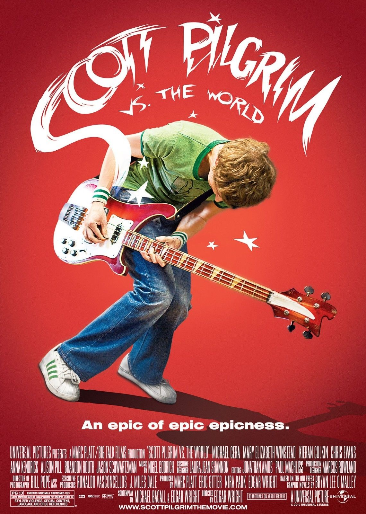

Media
I want to use this part of my site for films, tv shows, and youtube channels I like. I might end up including more stuff over time.
Films & Tv shows
Follow my Letterboxd if you like what I watch!
Currently watching...




×

Youtube
Here's a list of my favorite youtube channels. Some of them are in Spanish, but I recommend watching them if you're learning Spanish or want to know more about the culture.